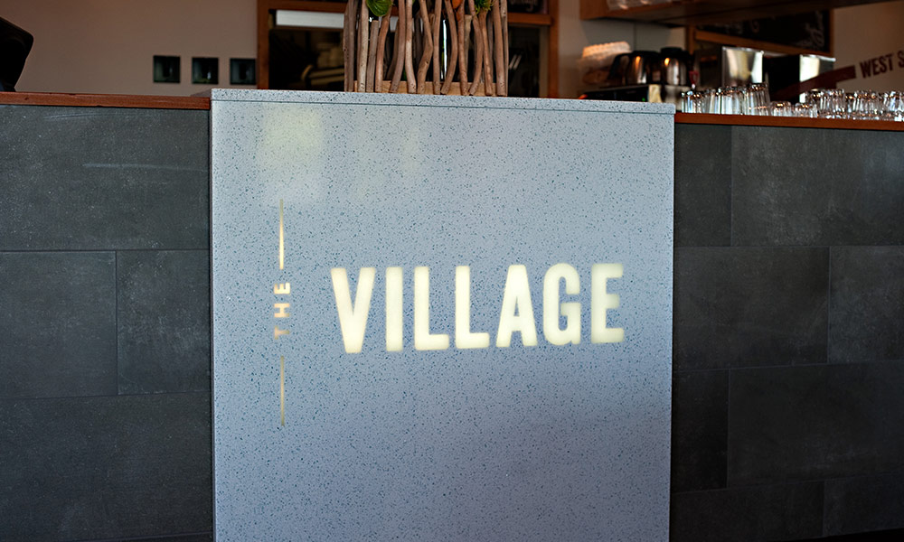

Вывески, знаки, логотипы
Вывески и эмблемы от d'ecorce это абсолютно уникальный продукт, который можем предложить только мы. Материал, из которого они изготовлены, это на 100% Vitronite. Логотип получается бесшовным, так как от отлит прямо внутрь остальной поверхности. Мы можем сделать логотип/изображение высоко контрастным к остальной поверхности или полупрозрачным со встроенной подсветкой. Мы также можем создать практически любой желаемый цвет.
В целом, вывески из Vitronite от d'ecorce создают очень крутой визуальный эффект и могут использоваться во многих сферах, например:
- Кассовые стойки
- Зона ресепшн
- Стеновые панели
- Барные стойки
- Столешницы в кафе и ресторанах
- Переговорные комнаты
- Всё, на что хватит фантазии..
Прочный и износостойкий
Устойчив к механическим повреждениям (деформациям, сколам) и не царапается.
Легок в уходе
Всё что Вам потребуется это обычное мыло и вода. Vitronite не впитывает грязь и неприятные запахи.
Экологичный
Vitronite изготовлен из переработанного стекла и не содержит никаких вредных веществ.